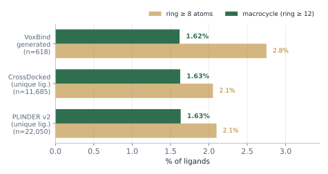
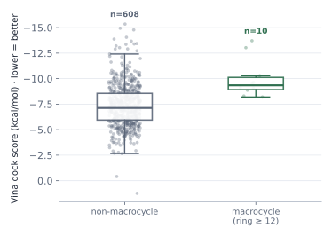
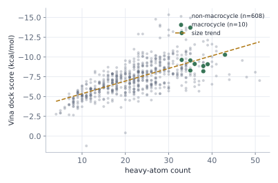

Do the ligands VoxBind generates contain macrocycles, how does their rate compare to the training/reference corpora (CrossDocked, PLINDER), and does being a macrocycle correlate with a better Vina docking score? A macrocycle = any ring of ≥ 12 atoms (largest SSSR ring); ring ≥ 8 shown as a looser "large-ring" cut.
Largest ring size per ligand computed with RDKit
(GetRingInfo().AtomRings()). Datasets deduplicated by canonical SMILES so the fraction
reflects distinct chemistry, not repeated poses/instances.
Table 1 · Fraction of ligands that are macrocyclic
Highlighted column = macrocycle rate at the standard ≥ 12-atom threshold.
| Population | N ligands | macrocycles (ring ≥ 12) | % macro (ring ≥ 12) |
large-ring (ring ≥ 8) | % large-ring (ring ≥ 8) |
|---|---|---|---|---|---|
| VoxBind generated generateddiffusion samples, 62 pockets · 10k-step run · res_ep99_test | 618 | 10 | 1.62% | 17 | 2.75% |
| CrossDocked datasetreference ligands, deduplicated by canonical SMILES | 11,685 (149,309 poses) | 190 | 1.63% | 240 | 2.05% |
| PLINDER v2 (unique) datasetcanonical SMILES, deduplicated · RSCC≥0.8 pretrain corpus | 22,050 (113,976 inst.) | 360 | 1.63% | 463 | 2.10% |
| PLINDER v2 (instances) datasetinstance-level (multi-ligand, no dedup) — what the encoder sees | 113,976 | 1,430 | 1.25% | 1,846 | 1.62% |

Figure 1 · Macrocycle (ring ≥ 12) and large-ring (ring ≥ 8) rate per population.
Restricted to the two populations that carry per-molecule Vina scores
(from metrics.json): the 618 VoxBind samples and the 62 CrossDocked test-set
reference ligands. Vina is reported in kcal/mol where lower (more negative) = stronger predicted binding.
Δ = mean(macro) − mean(non-macro); a negative Δ means macrocycles dock better.
Point-biserial r correlates the macrocycle flag (1/0) with the score.
Table 2 · Docking by macrocycle status
p = Mann–Whitney U (two-sided); * = p<0.05.
| Population · metric | n macro | n non |
mean macro | mean non |
Δ | pt-bis r | p |
|---|---|---|---|---|---|---|---|
| VoxBind generated · dock618 samples · full Vina re-dock | 10 | 608 | -9.98 ±1.90 | -7.32 ±2.10 | -2.66 | -0.158 | 0.000 * |
| VoxBind generated · minimize618 samples · Vina local minimize | 10 | 608 | -9.23 ±2.08 | -6.31 ±2.52 | -2.92 | -0.145 | 0.000 * |
| VoxBind generated · score_only618 samples · Vina score of generated pose | 10 | 608 | -8.78 ±2.04 | -5.28 ±6.14 | -3.50 | -0.072 | 0.000 * |
| CrossDocked refs · dock62 test-set reference ligands · full Vina re-dock | 3 | 59 | -7.33 ±1.75 | -6.91 ±1.98 | -0.42 | -0.047 | 0.757 |

Figure 2 · Vina dock score of VoxBind samples, macrocycle vs. non-macrocycle (box = IQR/median; points = individual samples; better at top).
A macrocycle contributes 12–23 ring atoms on its own, so macrocyclic ligands are
necessarily heavy — and Vina scores grow more negative with heavy-atom count regardless of binding.
Before attributing the §2 gap to macrocyclicity we control for size two ways: (a) an OLS with
n_atoms + macrocycle flag as predictors, and (b) a size-matched comparison against only the
large non-macrocycles.
Table 3 · Size control (VoxBind generated · dock)
| mean heavy atoms — macro vs non | 36.5 vs 22.3 |
| corr(dock, heavy atoms) — Pearson / Spearman | -0.656 / -0.706 |
| Vina per added heavy atom (OLS slope) | -0.159 kcal/mol·atom⁻¹ |
| macrocycle effect, size-adjusted (OLS coef ± SE) | -0.41 ±0.52 · p = 0.437 |
| size-matched set (non-macro heavy atoms ≥ smallest macrocycle) | n = 10 macro vs 81 large non-macro |
| size-matched Δ · p | -0.87 kcal/mol · p = 0.153 |

Figure 3 · Dock score vs. heavy-atom count. Macrocycles (green) sit at the heavy / strong-dock end of the general size trend (dashed).
voxbind/exps/260518_voxbind_10k_noise/samples/res_ep99_test;
CrossDocked = voxbind/dataset/data/crossdocked_pocket10 (unique ligands);
PLINDER = voxbind/splits/plinder/v2/plinder_selected.csv.How the conditioning signal (pocket / density / gradmag) is fused into the generative backbone — options, trade-offs, and the choice we'll run.
Where results are not reproducing, the suspected cause, and the plan to pin it down.
New external baselines to add to the lp_edrscc_v2 Table 1 comparison.
lp_edrscc_v2).